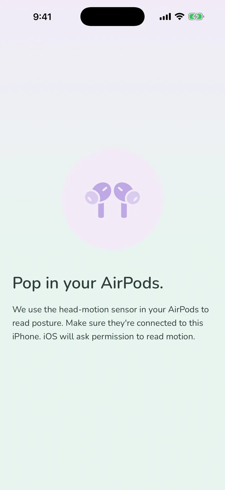
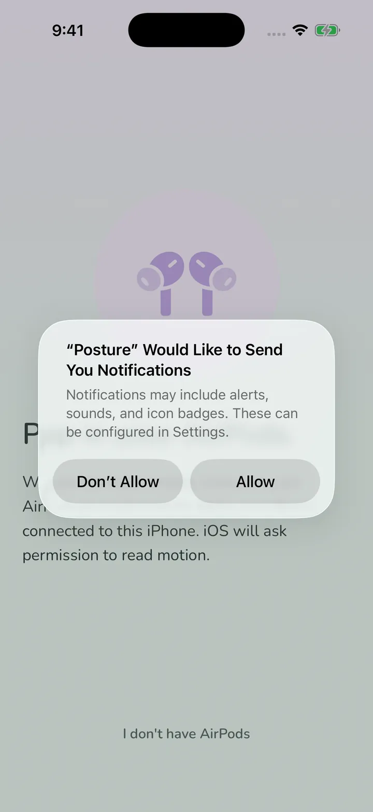
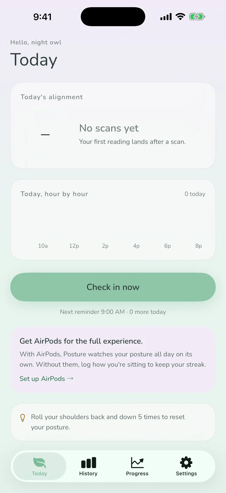
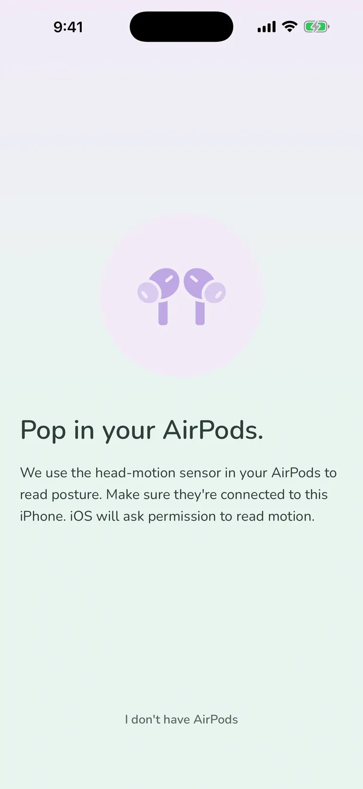

Take a short pause to pay attention to how you are sitting. Desk Reset guides a three-minute practice with live cues from compatible AirPods.
3-minute practice · iPhone · Compatible AirPods · Apple Watch
Download on the App Store



Start with a guided three-minute session. Live AirPods coaching is optional, and manual check-ins work without compatible AirPods.
During a guided practice, compatible AirPods read head position and give a gentle cue when your posture shifts. Optional all-day background monitoring is available with Posture+.
Build a daily posture streak, with freeze protection for off days.
Stand tall, sit tall, then slouch on purpose. Desk Reset learns your personal range and scores each guided practice against it.
Every monitored minute becomes your daily report: % of the day aligned, hour-by-hour rhythm, best stretches, and slouches caught.
Apple Watch adds optional background coaching and complications so posture practice can stay on your wrist.
With compatible AirPods, follow live alignment cues during a practice. Manual check-ins work without AirPods.
See your posture score update in real time. Rings fill as you hold good posture.
Review past sessions, see your posture trends, and watch your average score improve over time.
Desk Reset processes posture data on-device. AirPods head-motion data stays on your phone and is not sent to a server. No accounts, ads, or posture analytics. Purchase status is validated through Apple StoreKit and RevenueCat.
Desk Reset supports posture awareness and practice. It is not medical advice and does not diagnose, treat, cure, or prevent any condition.
Privacy Policy →How it's built.
Desk Reset makes it easier to pause and notice how you are sitting. Start with a short guided practice, use compatible AirPods for live cues, and return to a routine that fits your day.
Posture+ is available monthly, yearly, or as a one-time lifetime unlock. A free trial is available on subscription plans. Prices are shown in the app before you buy and vary by region.
AirPods Coaching. Live posture cues during guided sessions, with optional all-day background monitoring for people who want it.
Apple Watch Integration. Background coaching on your wrist via the companion watch app.
Daily Reports & Streaks. Minute-by-minute posture aggregates, weekly trends, and daily streaks with freeze protection.
Manage or cancel any time in Settings > Apple ID > Subscriptions.
| Platform | iOS 17+, watchOS 10+ |
| Language | Swift 6 with strict concurrency |
| Framework | SwiftUI · CoreMotion · AVFoundation · HealthKit |
| Data | On-device only, SwiftData with App Group |
| Storage | SwiftData cache shared via App Group |
| Privacy | No accounts or posture analytics. Purchase status uses Apple and RevenueCat. |
Guided start. Calibrate your posture, follow live cues if you have compatible AirPods, and begin with a three-minute practice.
Multi-device practice. Use iPhone for sessions and history, compatible AirPods for live cues, and Apple Watch for optional background coaching.
Streaks. Freeze protection covers off days, and the flame grows as your streak builds.
Privacy. No analytics, no accounts, no data leaving your device. Your AirPods' head-motion data is processed on-device and never recorded or transmitted.
Quick answers about the AirPods posture app.
Yes. Desk Reset: Posture Practice reads the head-motion sensor in compatible AirPods and gives you live alignment cues during a guided three-minute posture practice. Optional all-day monitoring is available with Posture+.
Desk Reset works with AirPods Pro (1st and 2nd generation), AirPods 3rd generation, AirPods 4 with ANC, and AirPods Max.
Yes. You can use manual check-ins to keep the awareness habit going, but they do not measure your alignment. Live motion feedback needs compatible AirPods.
It is free to start. The three-minute guided practice is free, with a daily streak, and the optional Posture+ upgrade adds longer practices, posture walks, history and trends, and optional all-day monitoring.
Yes. The companion Apple Watch app adds optional background coaching and complications, so posture practice can stay on your wrist. These Apple Watch nudges are part of Posture+.
Calibrate once by standing tall, sitting tall, then slouching on purpose so the app learns your range. Then start a three-minute practice, sitting or standing, and follow the live cues as your posture shifts.
Your AirPods head-motion data is processed on your device and is not sent to a server, and there are no accounts. Desk Reset supports posture awareness and practice only, and it does not diagnose, treat, cure or prevent any condition.
Three-minute guided practices are free to start. No account required.
Download on the App Store